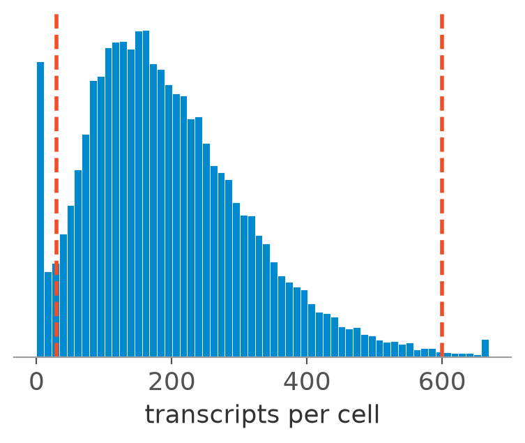
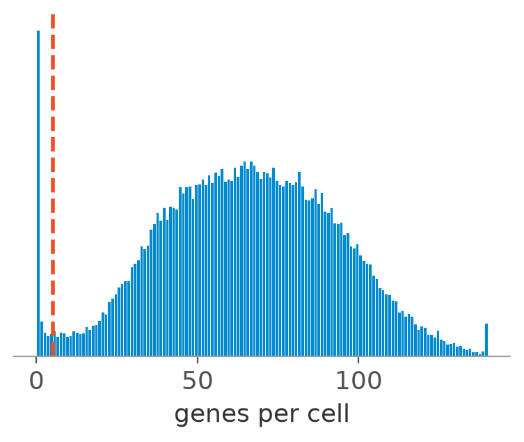
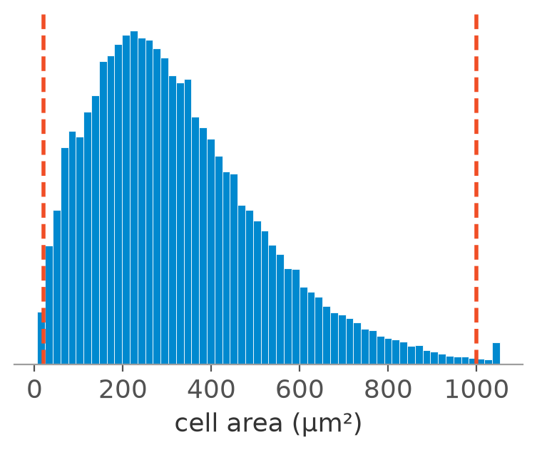
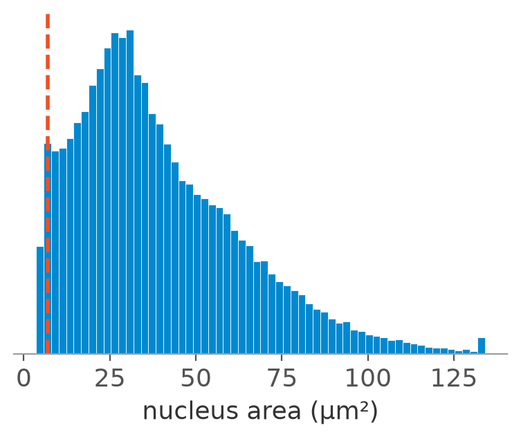

Quality control · cells
Four numbers per cell: detection and segmentation
Data
QC
Filter
Normalize
Cluster
Markers
Detection
Transcripts per cell

median 178 · 1,439 cells have 0
Detection
Genes per cell

median 65 of 347 genes
Segmentation
Cell area

median 290 µm²
Segmentation
Nucleus area

median 34 µm²
Too few transcripts or genes: empty, damaged or cut cell. Too many: merged cells.
Tiny area: fragment or debris. Huge area: merged cells or an over-expanded nucleus.
Different from scRNA-seq: no "% mitochondrial reads", because the panel has no mitochondrial genes. Dashed lines = the cut-offs we will use in Practical 2.
Data: Practical 2 dataset, all 62,268 cells before filtering. Axes cut at the 99.8th percentile.